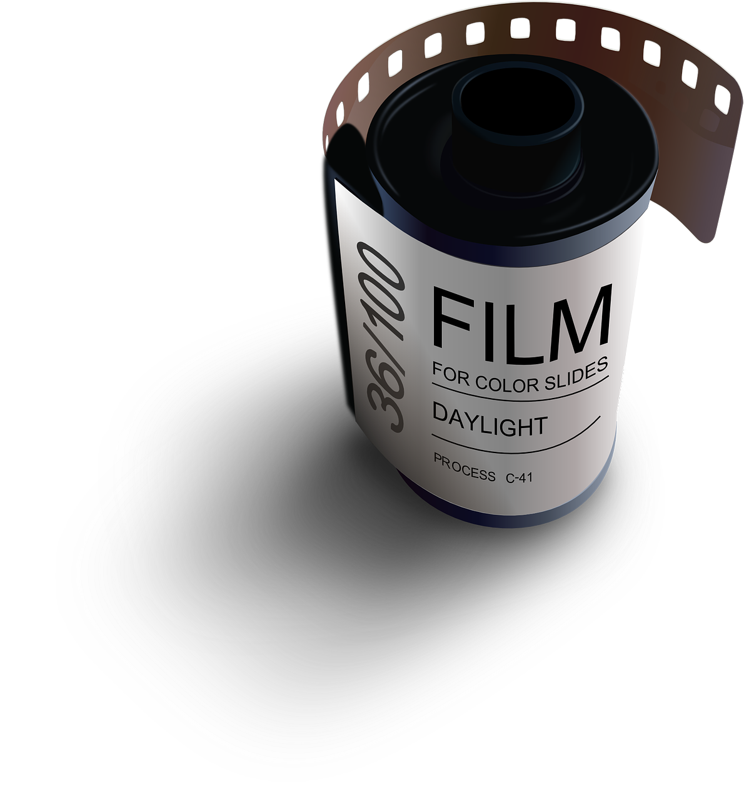
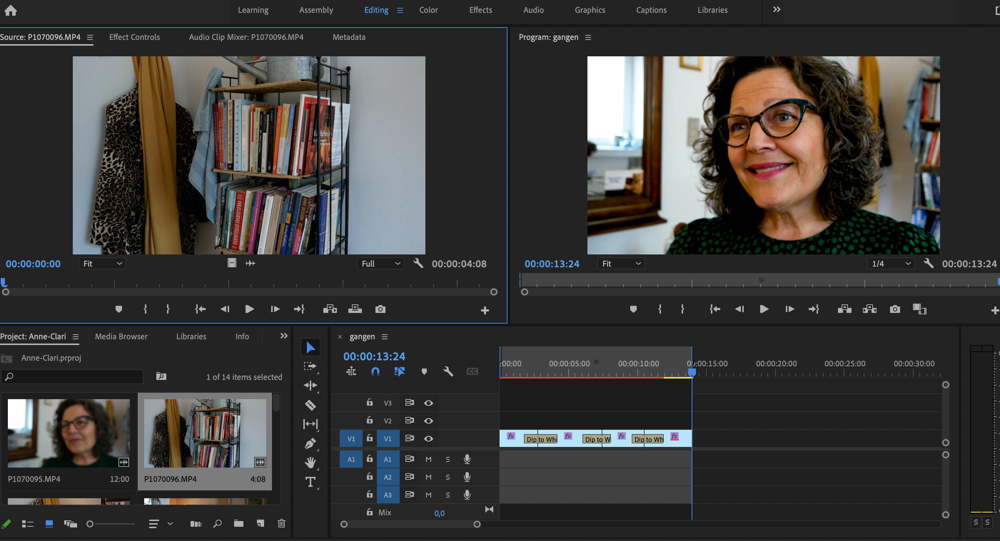

Tema 5 - Grundlæggende indhold
Tema beskrivelse
Dette tema beskæftiger sig med design, programmering og produktion af enkle digitale indholds løsninger til udvalgte medieplatforme. I temaet fokuseres på produktion af enkelt indhold til medieplatforme med afsæt i datadrevet brugerforståelse. Løsninger designes, programmeres og produceres med udgangspunkt i indholds- og forretningsstrategi, ligesom der introduceres til centrale teknologier og forretningsmodeller der indgår i design og programmering af digitalt indhold.”

Projekt beskrivelse
05.01.01 Pilotprojekt
I dette projekt skulle vi lave et interview med en person som har en passion. Dette skulle filmes, lydoptages og der blev også lavet en photosession. Denne film med lyd skulle redigeres og opsættes i et lille website, der præsenterede videoen og billederne.
Refleksioner projekt
Projektet var sjovt og gruppe arbejdet var velfungerende. Jeg fik god indsigt i gode interview spørgsmål, lys, lyd og gode vinkler at optage fra. Lyd og film redigering var enormt interessant og man fik mulighed for igen at udvikle sig kreativt, både sammen i gruppen, men også selvstændigt. Vores person Charlotte, endte også med at bruge en af videoerne.

Projekt beskrivelse
05.02.01 Re-design og temadokumentation
I dette projekt skulle vi redesigne en selvvalgt virksomheds website. Redesignet skulle munde ud i et kodet website og indeholde indholdsproduktion i form af tekst, foto og video. Vi skulle også aflevere et processdokument, som dokumenterede vores arbejdsproces.
Refleksioner af tema og projekt
Det var en spændende proces at redesigne en hjemmeside. Og i
særdeleshed at det også blev en af de mest kollaborative projekter
i semestret. Vi var meget afhængige af hinanden i gruppen og
skulle finde ud af at koordinere det hele bedst muligt. Det gik
rigtig godt i vores gruppe, men vi var også meget enige om mange
generelle ting som lægger til grund for et godt samarbejde.
Vi lærte at kode sammen og bruge github og netlify til dette.
Derudover var balancen ret fin mht at finde en god fordeling i
opgaverne.
Jeg blev her i dette tema introduceret for video redigering første
gang og det i sig selv er også en enormt spændende proces jeg har
fået meget læring ved allerede.
Alt i alt nogle rigtige gode projekt, god gruppearbejde læring og
et udfordrende tema.”